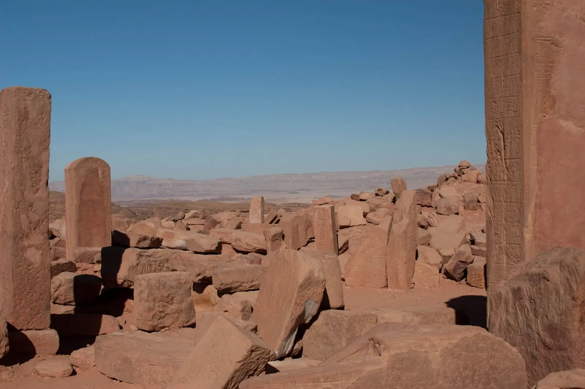

返回行程列表
南西奈高山上，塞拉比特卡迪姆哈索尔神庙的遗址和立石

纳瓦米斯，你度过第一夜的地方


这不是瑜伽静修。没有老师，也没有日程。只有西奈沙漠深处的四天，在最古老、最寂静的地方星空下度过的三个夜晚，以及足够的时间去冥想、思考，或者只是存在。每一夜都让你更接近“绿松石女主人”哈索尔的神庙，在那里你看日落、在星空下入睡、随日出醒来。约瑟夫和安妮特带队，玛丽主厨负责每一餐，其余的交给沙漠。

绿松石之路
这段旅程有一个故事。你从纳瓦米斯开始——约6000年前建造的圆形石墓，比金字塔更古老。然后登上一个古老的绿松石洞穴，埃及人曾在那里开采献给女神的蓝绿色宝石。最后到达她的神庙：爱、音乐与欢乐之女神、“绿松石女主人”哈索尔，位于塞拉比特卡迪姆的山顶。在埃及，如此古老、如此寂静、又如此少人造访的地方并不多。
行程
- 第1天：达哈布 → 希杜达沙丘 → 在格贝尔·马赫鲁姆（龙头山）午餐 → 纳瓦米斯。下午、日落，以及在纳瓦米斯静默的夜晚
- 第2天：在纳瓦米斯日出冥想 → 驱车前往古老绿松石洞穴下方的山谷 → 攀登约一小时到洞穴，在那里静默片刻，然后下山。在山谷营地晚餐和过夜
- 第3天：驱车前往塞拉比特卡迪姆。午餐，在树荫下安静休息。约15:00登上哈索尔神庙看日落，然后晚餐、观星，在神庙附近的营地过夜
- 第4天：在神庙看日出 → 下山 → 午餐 → 返回达哈布，傍晚到达
我们不教你怎么冥想。沙漠足够安静，会自己教你。
夜空，以及光
远离任何城镇，塞拉比特卡迪姆和纳瓦米斯拥有埃及最暗的夜空之一。晴朗的夜晚，银河从地平线延伸到地平线。这些年来，一些客人和当地贝都因人告诉我们，他们在这里看到奇怪的光在天空中移动。我们自己没有见过，也不能做任何承诺。但西奈有很长的此类传说历史，2022年几位美国退伍军人说他们在2014年看到西奈边境上空无法解释的光。阅读故事
出发前先看看
塞拉比特卡迪姆：绿松石矿与哈索尔神庙
塞拉比特卡迪姆的法老时代绿松石矿
比金字塔更古老的纳瓦米斯古墓
费用包含
- 在达哈布酒店或 The Hub 接送
- 4天团体专属四驱车
- 所有许可和贝都因费用
- 4天所有餐食，由玛丽主厨烹制
- 饮用水、茶和咖啡
- 露营装备：床垫、毯子和睡袋
- 向导约瑟夫和安妮特
不包含：观星设备（望远镜或双筒望远镜）、小费和个人消费。
需要携带
- 护照（内陆公路有检查站）
- 好的徒步鞋
- 夜晚穿的保暖衣物（山里很冷）
- 头灯
- 任何能帮助你冥想的东西：日记本、披肩、坐垫
这段旅程适合你吗？
它适合追求寂静多于舒适的人。你在户外星空下睡觉，没有淋浴，有两段各约一小时的陡坡，分别通往绿松石洞穴和神庙。你不需要是运动员，但要能按自己的节奏上坡。没有必须遵循的安排：可以加入徒步，也可以留在营地与自己独处。
价格
$1,600 1–2人 · 3–4人$2,200
客人评价
取消政策
出行前3天可免费取消。之后取消需支付全部费用。
常见问题
没有，这正是用意所在。没有课程，也没有日程。你用自己的方式冥想，或者只是静静坐着。其他一切由约瑟夫和安妮特打理。
在三个不同的地方星空下过三夜：纳瓦米斯、绿松石洞穴下方的山谷和哈索尔神庙附近。我们带床垫、毯子和睡袋。山里的夜晚可能很冷，请带保暖衣物。
我们不能保证。一些客人和当地贝都因人跟我们说过夜空中的光，但我们自己没有见过。我们能保证的是埃及最暗、最美的夜空之一。
中等即可。有两段各约一小时的上坡：到绿松石洞穴和到哈索尔神庙。其余是短途散步和休息时间。
除观星设备、小费和个人消费外的一切：交通、许可、贝都因费用、所有餐食、露营装备和向导。1–2人$1,600，3–4人$2,200。
出行前3天可免费取消。之后取消需支付全部费用。